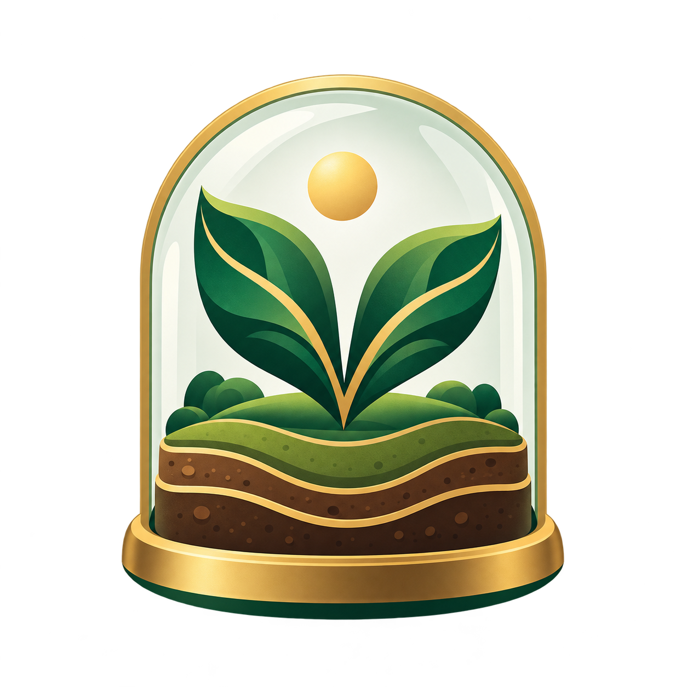

A little world is taking root…

Plant three new plants.
Choose a climate. Let nature do the rest.
The same seed and biome always grow the same starting world. Your current world is saved in this browser; generating replaces it.
Shape a landscape, fill it with life, and choose how to play. Self-sustaining stays alive without upkeep. Pet Care needs food, water, and a tidy-up, even while you are away.
Choose something in your field kit, then tap the soil. Green placement previews show a good spot. R rotates; − and + change size. Planting costs seeds in Garden Journey. Free build has unlimited planting.
Terrain tools raise and lower soil, add rocks, and carve ponds. Drag a terrain brush to sculpt; right-drag or use Observe to orbit.
Trees cast shade, bees and butterflies pollinate flowers, and fungi feed nearby soil. Weather moves water downhill. Mist or vent to adjust moisture; use 5× or 20× to see changes sooner.
Healthy mature plants glow gold when seeds are ready. Harvest to fund new plantings. Inspect to see local conditions or move an element. Growth starts at Rapid 12×. Lock daylight while the clock keeps running in Care & display. The Field Guide tracks eight chapters and five habitat discoveries. Progress saves on this device. Use Care & display to install the app and play offline after one complete online visit.
Made with Babylon.js · Procedural 3D · A playful ecosystem simulationEnvironment lighting: Babylon.js Assets · CC BY 4.0
Keep playing here, install on your home screen, or download the complete game files.
The ZIP includes the game, assets, and instructions for running it on your computer. Downloading requires an internet connection.
Connect once to prepare offline play
Open this site in Safari. Tap Share, then Add to Home Screen and Add.
Open in Chrome. Use Install Verdant when offered, or the browser menu → Install app / Add to Home screen.
Use the install icon in Chrome or Edge’s address bar. In Safari on Mac, use File → Add to Dock.
Use the published HTTPS address. Saves stay on this device and site address. Export your world before moving to a different host. Pet Care needs still progress offline.
You’ve reached the scene limit. Remove a few elements with the eraser to make room for something new.